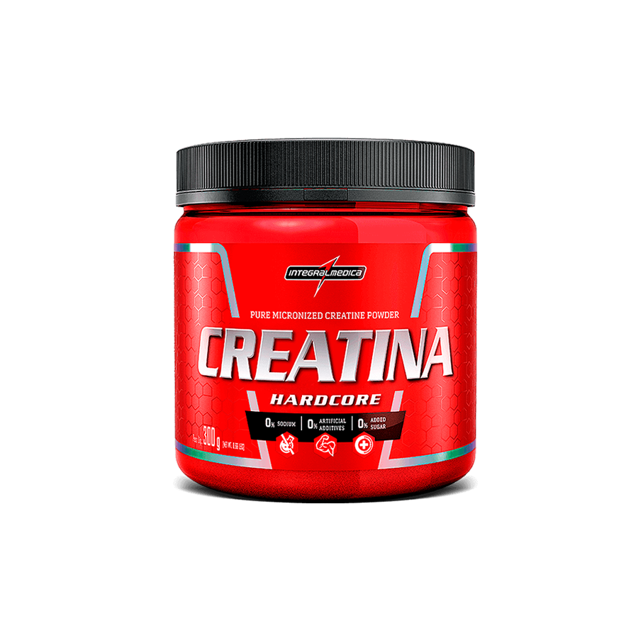
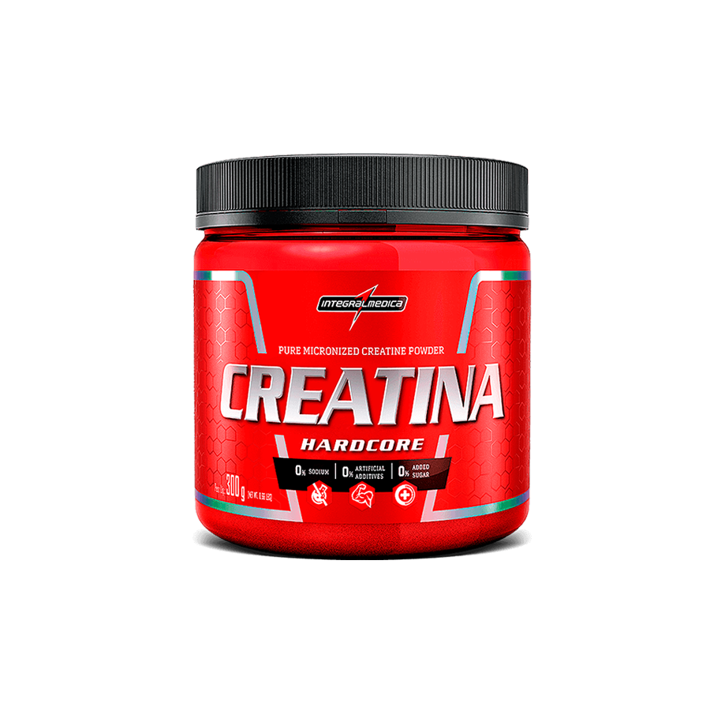

Suprir Carências Nutricionais: Os suplementos preenchem lacunas na dieta, fornecendo nutrientes essenciais ausentes na alimentação regular.
Melhorar a Performance Física: Alguns suplementos, como whey protein, creatina e BCAA, são populares entre os praticantes de atividades físicas. Eles podem melhorar a resistência, reduzir o cansaço durante o exercício e contribuir para o ganho de massa muscular.
Recuperação Pós-Treino: uplementos também auxiliam na recuperação após o treino, acelerando a reparação dos músculos e tecidos.
Aumentar a Imunidade: Alguns suplementos contêm vitaminas e minerais que fortalecem o sistema imunológico.
Regulação Hormonal: Em casos específicos, como em idosos ou gestantes, a suplementação pode ajudar a regular hormônios e melhorar a saúde.
Quem pode usar?
Gestação e amamentação: Durante esses períodos, as necessidades nutricionais aumentam, e os suplementos podem ajudar a suprir deficiências
Veganos: Pessoas que seguem uma dieta estritamente vegana podem precisar de suplementos para garantir a ingestão adequada de certos nutrientes, como vitamina B12 e ferro.
Praticantes de exercícios físicos: Alguns atletas ou pessoas que praticam atividades físicas intensas podem se beneficiar de suplementos para melhorar o desempenho e a recuperação.
Deficiências nutricionais identificadas por um profissional: Se um profissional de saúde identificar deficiências específicas em um indivíduo, suplementos podem ser recomendados para corrigir essas carências.
Idosos com senilidade: À medida que envelhecemos, a absorção de nutrientes pode diminuir. Suplementos podem ajudar a prevenir deficiências em idosos.
Os tipos mais comuns são:
Multivitamínicos e Multiminerais: Contêm uma combinação de vitaminas e minerais essenciais para a saúde geral.
Proteína em Pó: Usada para auxiliar no ganho de massa muscular e recuperação após o exercício físico.
Creatina:Ajuda a melhorar o desempenho atlético e aumentar a força muscular.
Omega-3 Rico em ácidos graxos essenciais, benéficos para a saúde cardiovascular e cerebral.
Vitamina DImportante para a saúde dos ossos e sistema imunológico.
BCAAs (Aminoácidos de Cadeia Ramificada):Contribuem para a recuperação muscular e redução da fadiga durante o exercício.
Invista em sua saúde e alcance seus objetivos com nossos suplementos de alta qualidade. Estamos aqui para ajudar você a atingir o seu melhor!
 
